Complete Operational Manual & System Logic
Version 1.2.0 | Updated: April 2026
Welcome! This is a controlled real-world testing phase for OPS Kaimana. We invite operators, managers, and partners to test this standard system designed for small-to-medium seafood collection and processing facilities, particularly for remote operations in Eastern Indonesia before shipment to major hubs like Makassar or Surabaya.
Goal: We need your feedback on missing features, confusing steps, operational problems, and improvement ideas.
Selamat datang! Ini adalah fase pengujian dunia nyata yang terkendali untuk OPS Kaimana. Kami mengundang operator, manajer, dan mitra untuk menguji sistem standar ini yang dirancang untuk fasilitas pengumpulan dan pengolahan hasil laut skala kecil hingga menengah, khususnya untuk operasi jarak jauh di Indonesia Timur sebelum pengiriman ke pusat utama seperti Makassar atau Surabaya.
Tujuan: Kami memerlukan masukan Anda mengenai fitur yang kurang, langkah-langkah yang membingungkan, masalah operasional, dan ide perbaikan.
Admin: full system control + voiding
Email: admin.ops@kaimana.com
Password: Admin@123
Operator: daily receiving & dispatch
Email: operator.ops@kaimana.com
Password: Operator@123
Buyer: view allocations & invoices
Email: buyer.ops@kaimana.com
Password: Buyer@123
Please copy this section or print it to send your feedback via WhatsApp or Email.
Name: ________________________________
Role / Company: ________________________________
Account Tested: [ ] Admin [ ] Operator [ ] Buyer
Workflows Tested: ________________________________
What was confusing? ________________________________
Missing Features: ________________________________
Improvements Needed: ________________________________
Bugs/Errors Found: ________________________________
Overall Rating (1-5): [ ] [ ] [ ] [ ] [ ]
Final Recommendation:
[ ] Ready to use | [ ] Needs small improvement | [ ] Not ready yet
Understanding the difference between financial documents and physical movement is vital. Invoices record money, while Dispatches move items.
Memahami perbedaan antara dokumen keuangan dan pergerakan fisik sangatlah penting. Invoice mencatat uang, sementara Dispatch memindahkan barang.
EN: Receiving increases stock. Dispatch is the ONLY step that reduces physical stock. Invoices and Payments do NOT affect stock levels.
ID: Receiving menambah stok. Dispatch adalah SATU-SATUNYA langkah yang mengurangi stok fisik. Invoice dan Pembayaran TIDAK memengaruhi level stok.
The system supports three primary roles: Admin (full control + voiding), Operator (daily operations), and Buyer (portal access). Ensure you select the correct language (ID/EN) at the top right before logging in.
Sistem mendukung tiga peran utama: Admin (kontrol penuh + pembatalan), Operator (operasi harian), dan Buyer (akses portal). Pastikan Anda memilih bahasa yang benar (ID/EN) di kanan atas sebelum masuk.
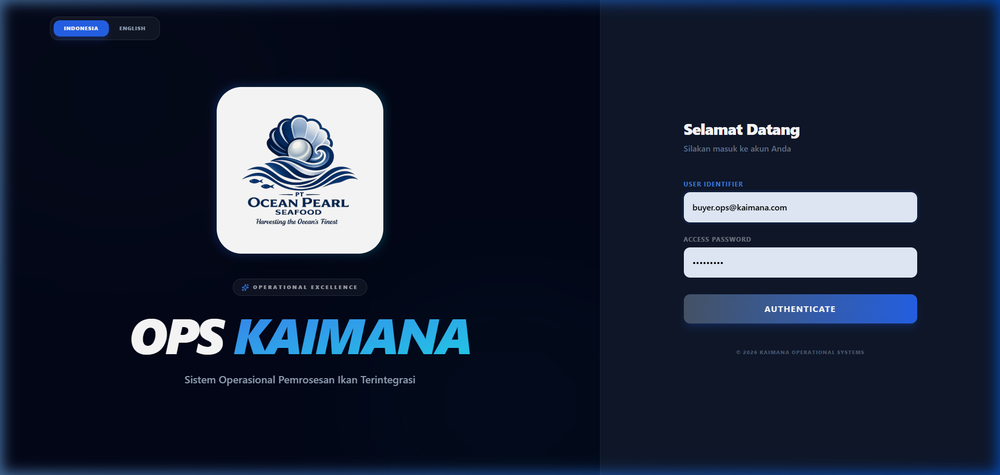
A high-level overview of operational metrics, including current stock levels and alerts for low inventory. Critical alerts will appear in red.
Ringkasan tingkat tinggi metrik operasional, termasuk level stok saat ini dan peringatan untuk stok rendah. Peringatan kritis akan muncul dalam warna merah.
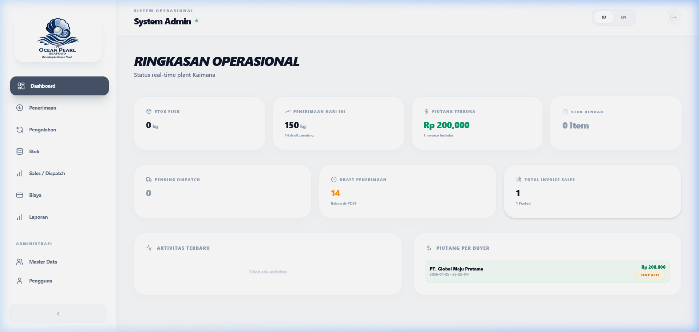
Record incoming fish from suppliers. Documents remain as "Draft" until POSTED. Posting creates the physical stock and triggers allocation rules.
Mencatat ikan yang masuk dari pemasok. Dokumen tetap sebagai "Draft" sampai di-POST. Posting membuat stok fisik dan memicu aturan alokasi.
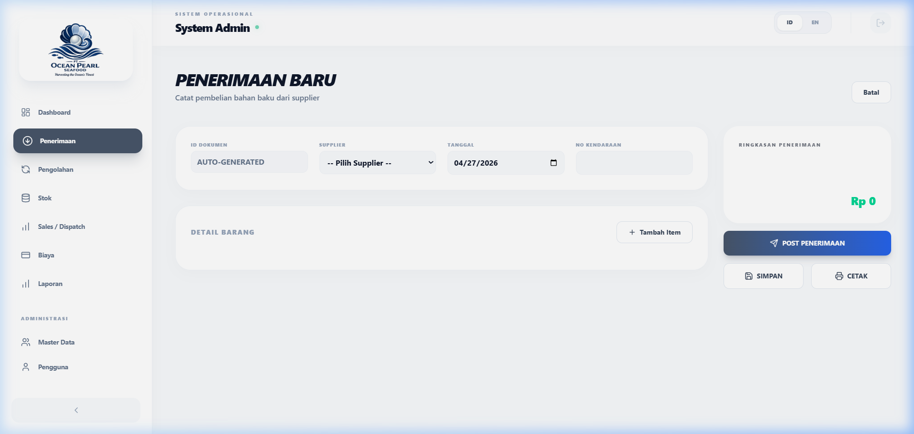
Split receiving items among different buyers. Assigned quantities are "Reserved" immediately, preventing them from being sold to others.
Membagi item penerimaan di antara pembeli yang berbeda. Kuantitas yang ditetapkan akan langsung "Dipesan" (Reserved), mencegahnya dijual ke orang lain.
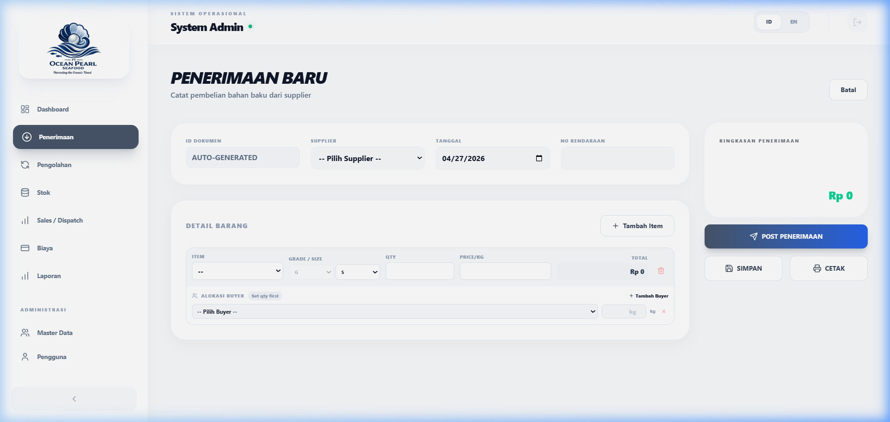
Invoices are automatically created from buyer allocations. You can also create manual sales for walk-in buyers from available stock.
Invoice dibuat secara otomatis dari alokasi pembeli. Anda juga dapat membuat penjualan manual untuk pembeli langsung dari stok yang tersedia.
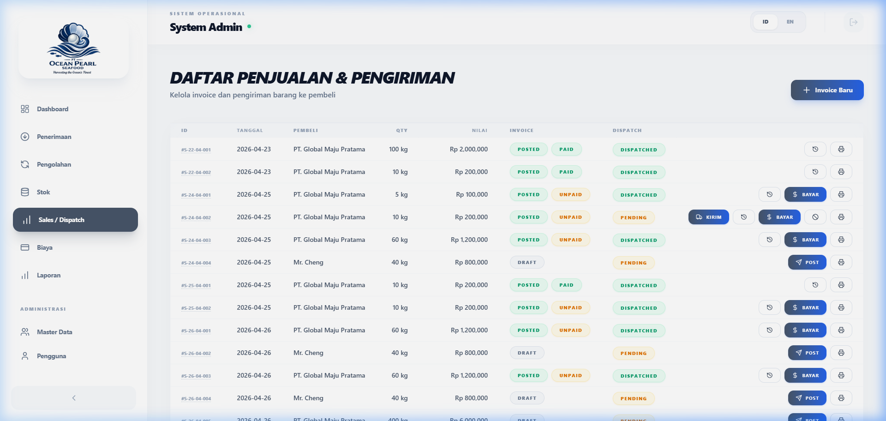
EN: Many users think creating an invoice removes stock. IT DOES NOT. The stock still physically exists in your warehouse until a Dispatch is posted. If you sell the same item manually, you will have a stock deficit.
ID: Banyak pengguna berpikir membuat invoice mengurangi stok. TIDAK. Stok masih ada secara fisik di gudang Anda sampai Dispatch di-post. Jika Anda menjual barang yang sama secara manual, Anda akan mengalami defisit stok.
Record full or partial payments. The status updates to "Paid" once the balance reaches zero. Use the Payment modal within any invoice.
Catat pembayaran penuh atau sebagian. Status diperbarui menjadi "Lunas" setelah saldo mencapai nol. Gunakan modal Pembayaran di dalam invoice apa pun.
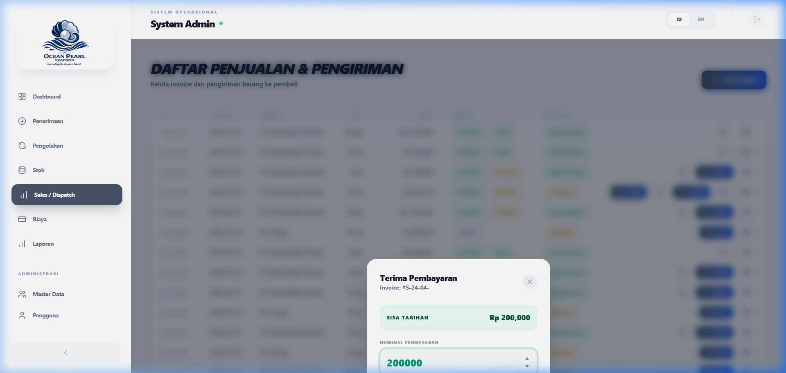
Record the transformation of raw material. Input Quantity is what you started with; Actual Quantity is what you yielded.
Mencatat transformasi bahan baku. Input Quantity adalah apa yang Anda mulai; Actual Quantity adalah apa yang Anda hasilkan.
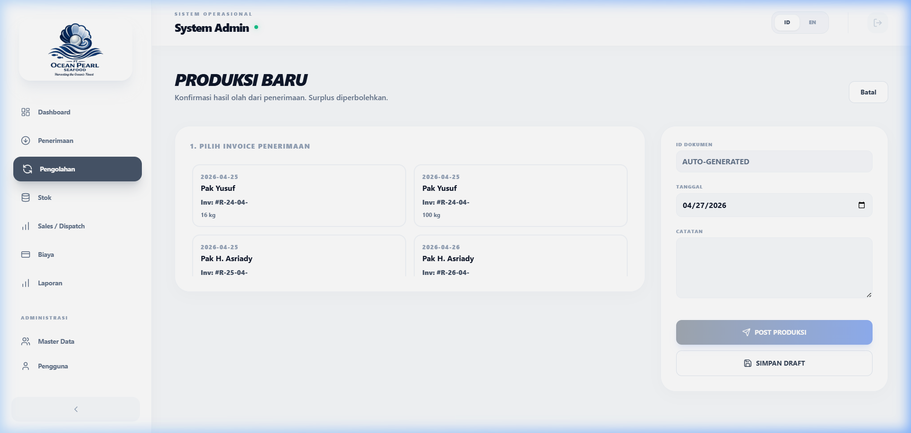
EN: Processing only transforms the item type/status. The stock remains in your physical inventory until dispatched.
ID: Processing hanya mentransformasi tipe/status item. Stok tetap berada di inventaris fisik Anda sampai di-dispatch.
The final operational step. Posting a dispatch physically removes the items from the warehouse and marks the transaction as complete.
Langkah operasional terakhir. Memposting pengiriman secara fisik mengeluarkan barang dari gudang dan menandai transaksi sebagai selesai.
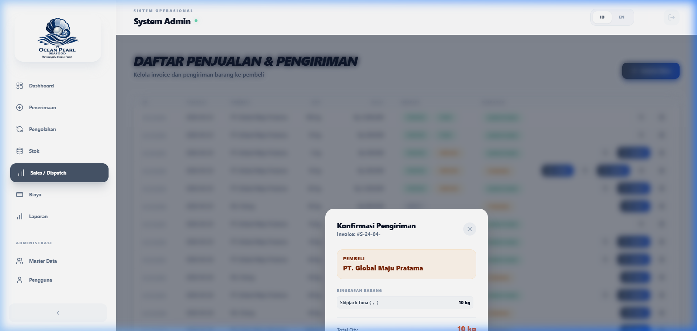
Monitor PhysicalQty (total items), ReservedQty (promised to buyers), and AvailableQty (free for sale).
Pantau PhysicalQty (total barang), ReservedQty (dijanjikan ke pembeli), dan AvailableQty (bebas dijual).
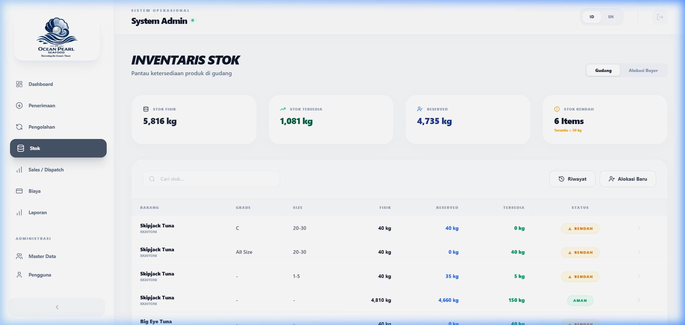
Generate CSV exports for Sales, Payments, and Stock. Use filters to narrow down by date or entity.
Buat ekspor CSV untuk Penjualan, Pembayaran, dan Stok. Gunakan filter untuk mempersempit berdasarkan tanggal atau entitas.
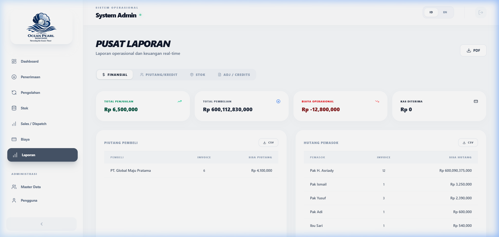
Admin Only. Voids a document and reverts its impact on stock and finances. This action is logged in the Audit Trail.
Khusus Admin. Membatalkan dokumen dan mengembalikan dampaknya pada stok dan keuangan. Tindakan ini dicatat dalam Jejak Audit.
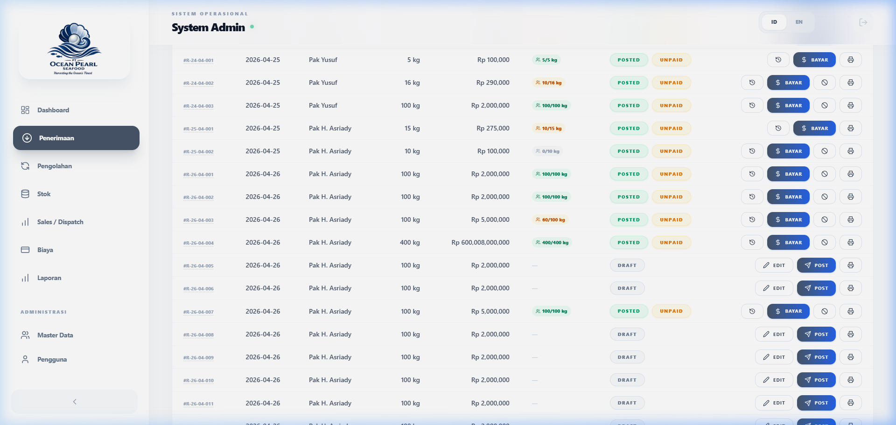
A restricted view where buyers can track their assigned products, historical invoices, and outstanding payments.
Tampilan terbatas di mana pembeli dapat melacak produk yang ditugaskan kepada mereka, riwayat invoice, dan pembayaran yang belum lunas.
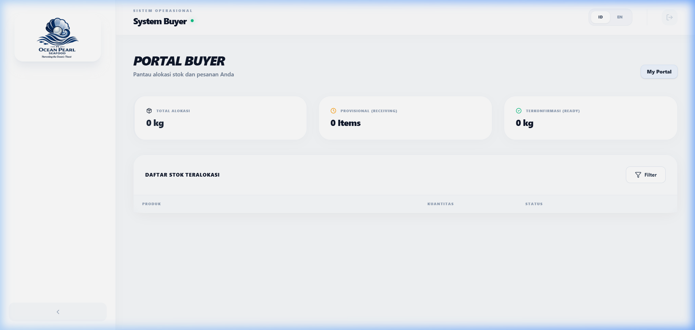
1. Never edit a POSTED document unless absolutely necessary (use Void instead).
2. Always verify Physical vs Available stock before committing to a manual sale.
3. Ensure every invoice has a matching Dispatch before end-of-day.
1. Jangan pernah mengedit dokumen yang sudah POSTED kecuali sangat diperlukan (gunakan Void sebagai gantinya).
2. Selalu verifikasi stok Physical vs Available sebelum melakukan penjualan manual.
3. Pastikan setiap invoice memiliki Dispatch yang cocok sebelum akhir hari.
Follow these steps to validate system integrity.
| Task | Steps | Expected Result | Pass |
|---|---|---|---|
| T-01 | Create Receiving + Split 100kg between 2 buyers | 2 allocations created; ReservedQty = 100kg | |
| T-02 | Post Receiving & Check Stock | Physical and Reserved counts increase correctly | |
| T-03 | Record Partial Payment | Invoice status is 'Partial'; balance is updated | |
| T-04 | Processing (Input 50kg, Output 48kg) | System records 2kg Loss; Stock updated | |
| T-05 | Dispatch only ONE buyer's items | Physical stock reduced ONLY for that buyer | |
| T-06 | Buyer Portal Isolation Test | Buyer A cannot see Buyer B's allocations |